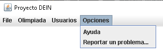
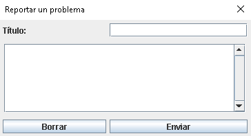

El desplegable nos permitirá acceder a dos opciones, que serán la ayuda y una ventana interna utilizada para reportar problemas.
Ayuda: El botón nos dirigirá a la ayuda de la aplicación.
Reportar un problema: Gracias a esta ventana los usuarios podrán escribir sus quejas a los administradores de la aplicación. Las quejas deberán estar compuestas por un título que identifique el report y un texto que explique con detalle la queja o sugerencia del usuario. El botón "Borrar" borrará todo el texto escrito dentro del campo utilizado para describir el problema y el botón "Enviar" enviará los datos en caso de que estos sean válidos.
* No se podrá enviar un report que no haya rellenado los dos campos.